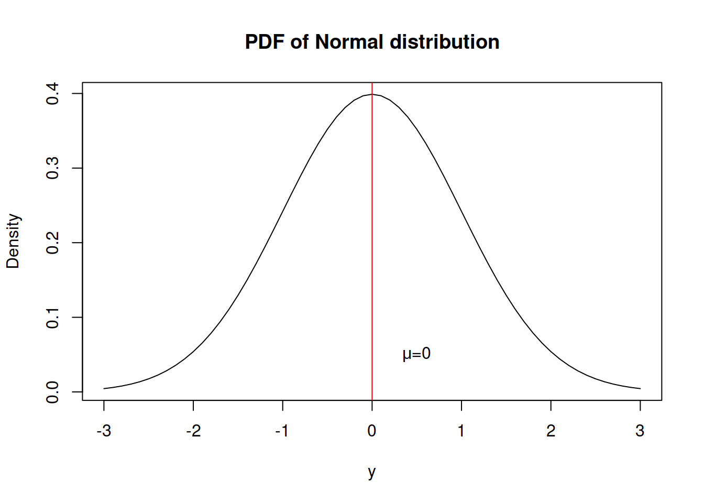
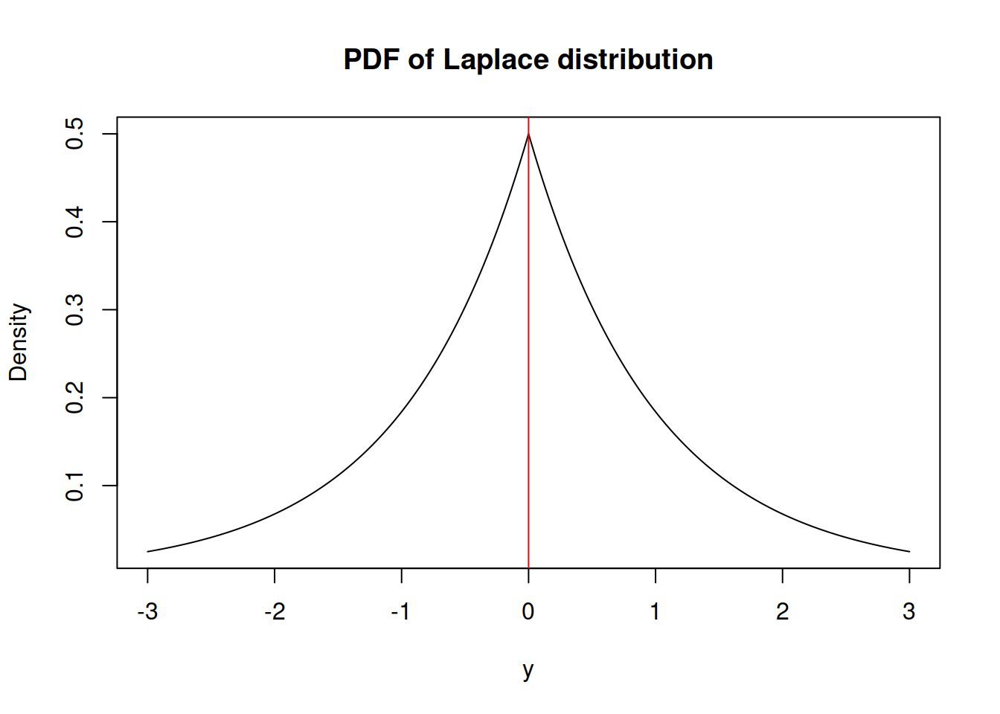
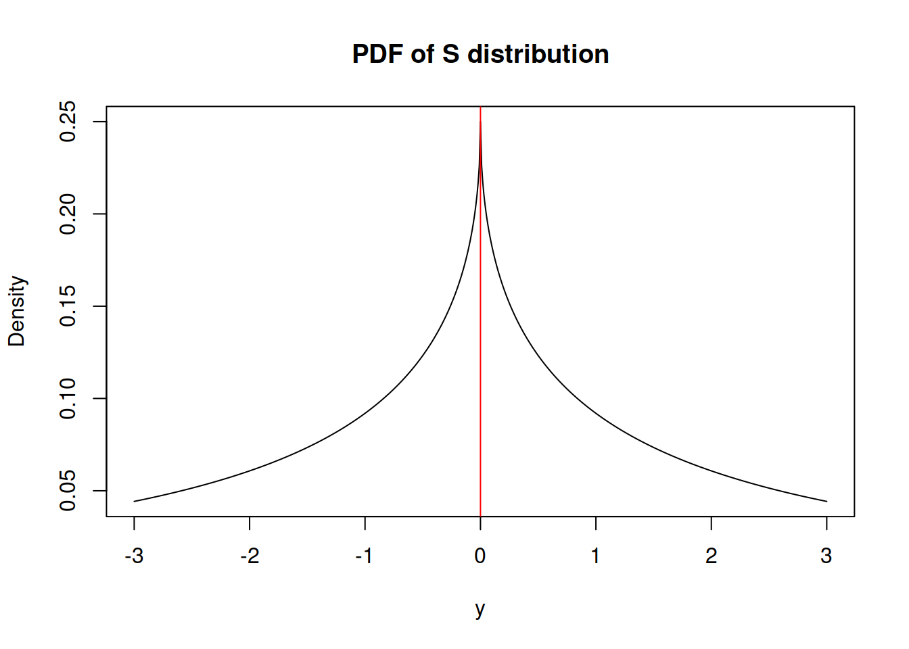
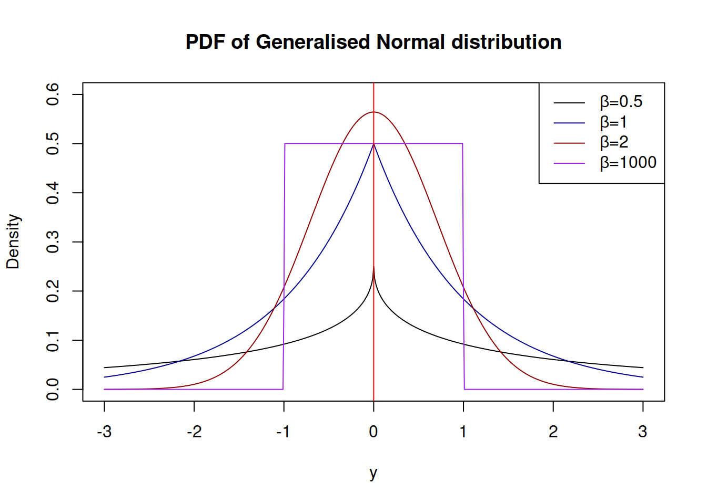

Chapter 2 A short introduction to main statistical ideas
Before moving forward and discussing distributions and models, it is also quite important to make sure that we understand what bias, efficiency and consistency of estimates of parameters mean. Although there are strict statistical definitions of the aforementioned terms (you can easily find them in Wikipedia or anywhere else), I do not want to copy-paste them here, because there are only a couple of important points worth mentioning in our context.
Bias refers to the expected difference between the estimated value of parameter (on a specific sample) and the “true” one (in the true model). Having unbiased estimates of parameters is important because they should lead to more accurate forecasts (at least in theory). For example, if the estimated parameter is equal to zero, while in fact it should be 0.5, then the model would not take the provided information into account correctly and as a result will produce less accurate point forecasts and incorrect prediction intervals. In inventory context this may mean that we constantly order 100 units less than needed only because the parameter is lower than it should be.
Efficiency means, if the sample size increases, then the estimated parameters will not change substantially, they will vary in a narrow range (variance of estimates will be small). In the case with inefficient estimates the increase of sample size from 50 to 51 observations may lead to the change of a parameter from 0.1 to, let’s say, 10. This is bad because the values of parameters usually influence both point forecasts and prediction intervals. As a result the inventory decision may differ radically from day to day. For example, we may decide that we urgently need 1000 units of product on Monday, and order it just to realise on Tuesday that we only need 100. Obviously this is an exaggeration, but no one wants to deal with such an erratically behaving model, so we need to have efficient estimates of parameters.
Consistency means that our estimates of parameters will get closer to the stable values (true value in the population) with the increase of the sample size. This is important because in the opposite case estimates of parameters will diverge and become less and less realistic. This once again influences both point forecasts and prediction intervals, which will be less meaningful than they should have been. In a way consistency means that with the increase of the sample size the parameters will become more efficient and less biased. This in turn means that the more observations we have, the better.
There is a prejudice in the world of practitioners that the situation in the market changes so fast that the old observations become useless very fast. As a result many companies just through away the old data. Although, in general the statement about the market changes is true, the forecasters tend to work with the models that take this into account (e.g. Exponential smoothing, ARIMA, discussed in this book). These models adapt to the potential changes. So, we may benefit from the old data because it allows us getting more consistent estimates of parameters. Just keep in mind, that you can always remove the annoying bits of data but you can never un-throw away the data.
Another important aspect to cover is what the term asymptotic means in our context. Here and after in this book, when this word is used, we refer to an unrealistic hypothetical situation of having all the data in the multiverse, where the time index \(t \rightarrow \infty\). While this is impossible, the idea is useful, because asymptotic behaviour of estimators and models is helpful on large samples of data.
Finally, we will use different estimation techniques throughout this book, one of the main of which is Maximum Likelihood Estimate (MLE). We will not go into explanation of what specifically this is at this stage, but a rough understanding should suffice. In case of MLE, we assume that a variable follows a parametric distribution and that the parameters of the model that we use can be optimised in order to maximise the respective probability density function. The main advantages of MLE is that it gives consistent, asymptotically efficient and normal estimates of parameters.
Now that we have a basic understanding of these statistical terms, we can move to the next topic, distributions.
2.1 Theory of distributions
There are several probability distributions that will be helpful in the further chapters of this textbook. Here, I want to briefly discuss those of them that will be useful.
2.1.1 Normal distribution
Every statistical textbook has normal distribution. It is that one famous bell-curved distribution that every statistician likes because it is easy to work with and it is an asymptotic distribution for many other well-behaved distributions in some conditions (so called “Central Limit Theorem”). Here is the probability density function (PDF) of this distribution: \[\begin{equation} f(y_t) = \frac{1}{\sqrt{2 \pi \sigma^2}} \exp \left( -\frac{\left(y_t - \mu_t \right)^2}{2 \sigma^2} \right) , \tag{2.1} \end{equation}\] where \(y_t\) is the value of the response variable, \(\mu_t\) is the mean on observation \(t\) and \(\sigma^2\) is the variance of the error term. The maximum likelihood estimate of \(\sigma^2\) is: \[\begin{equation} \hat{\sigma}^2 = \frac{1}{T} \sum_{t=1}^T \left(y_t - \mu_t \right)^2 , \tag{2.2} \end{equation}\] which coincides with Mean Squared Error (MSE), discussed in the section 1.
And here how this distribution looks:

What we typically assume in the basic time series models is that a variable is random and follows normal distribution, meaning that there is a central tendency (in our case - the mean \(mu\)), around which the concentration of values is the highest and there are other potential cases, but their probability of appearance reduces proportionally to the distance from the centre.
The normal distribution has skewness of zero and kurtosis of 3 (and excess kurtosis, being kurtosis minus three, of 0).
Additionally, if normal distribution is used for the maximum likelihood estimation of a model, it gives the same parameters as the minimisation of MSE would give.
2.1.2 Laplace distribution
A more exotic distribution is Laplace, which has some similarities with Normal, but has higher excess. It has the following PDF:
\[\begin{equation} f(y_t) = \frac{1}{2 s} \exp \left( -\frac{\left| y_t - \mu_t \right|}{s} \right) , \tag{2.3} \end{equation}\] where \(s\) is the scale parameter, which, when estimated using likelihood, is equal to the Mean Absolute Error (MAE): \[\begin{equation} \hat{s} = \frac{1}{T} \sum_{t=1}^T \left| y_t - \mu_t \right| . \tag{2.4} \end{equation}\]
It has the following shape:

Similar to the normal distribution, the skewness of Laplace is equal to zero. However, it has fatter tails - its kurtosis is equal to 6 instead of 3.
2.1.3 S distribution
This is something relatively new, but not ground braking. I have derived S distribution few years ago, but have never written a paper on that. It has the following density function: \[\begin{equation} f(y_t) = \frac{1}{4 s^2} \exp \left( -\frac{\sqrt{|y_t - \mu_t|}}{s} \right) , \tag{2.5} \end{equation}\] where \(s\) is the scale parameter. If estimated via maximum likelihood, the scale parameter is equal to: \[\begin{equation} \hat{s} = \frac{1}{2T} \sum_{t=1}^T \sqrt{\left| y_t - \mu_t \right|} , \tag{2.6} \end{equation}\] which corresponds to the minimisation of a half of “Mean Root Absolute Error” or “Half Absolute Moment” (HAM). This is a more exotic type of scale, but the main benefit of this distribution is sever heavy tails - it has kurtosis of 25.2. It might be useful in cases of randomly occurring incidents and extreme values (Black Swans?).

2.1.4 Generalised Normal distribution
Generalised Normal distribution (as the name says) is a generalisation for normal distribution, which also includes Laplace and S as special cases (Nadarajah 2005). There are two versions of this distribution: one with a shape and another with a skewness parameter. We are mainly interested in the first one, which has the following PDF: \[\begin{equation} f(y_t) = \frac{\beta}{2 s \Gamma(\beta^{-1})} \exp \left( -\left(\frac{|y_t - \mu_t|}{s}\right)^{\beta} \right), \tag{2.7} \end{equation}\] where \(\beta\) is the shape parameter, and \(s\) is the scale of the distribution, which, when estimated via MLE, is equal to: \[\begin{equation} \hat{s} = \sqrt[^beta]{\frac{\beta}{T} \sum_{t=1}^T\left| y_t - \mu_t \right|^{\beta}}, \tag{2.8} \end{equation}\] which has MSE, MAE and HAM as special cases, when \(\beta\) is equal to 2, 1 and 0.5 respectively. The parameter \(\beta\) influences the kurtosis directly, it can be calculated for each special case as \(\frac{\Gamma(5/\beta)\Gamma(1/\beta)}{\Gamma(3/\beta)^2}\). The higher \(\beta\) is, the lower the kurtosis is.
The advantage of GN distribution is it’s flexibility. In theory, it is possible to model extremely rare events with this distribution, if the shape parameter \(\beta\) is fractional and close to zero. Alternatively, when \(\beta \rightarrow \infty\), the distribution converges point-wise to the uniform distribution on \((\mu_t - s, \mu_t + s)\).
Note that the estimation of \(\beta\) is a difficult task, especially, when it is less than 2 - the MLE of it looses properties of consistency and asymptotic normality.
Dending on the value of \(\beta\), the distribution can have different shapes:

2.1.5 Asymmetric Laplace distribution
2.1.6 Log Normal, Log Laplace, Log S and Log GN distributions
2.1.7 Inverse Gaussian distribution
References
Nadarajah, Saralees. 2005. “A generalized normal distribution.” Journal of Applied Statistics 32 (7): 685–94. https://doi.org/10.1080/02664760500079464.